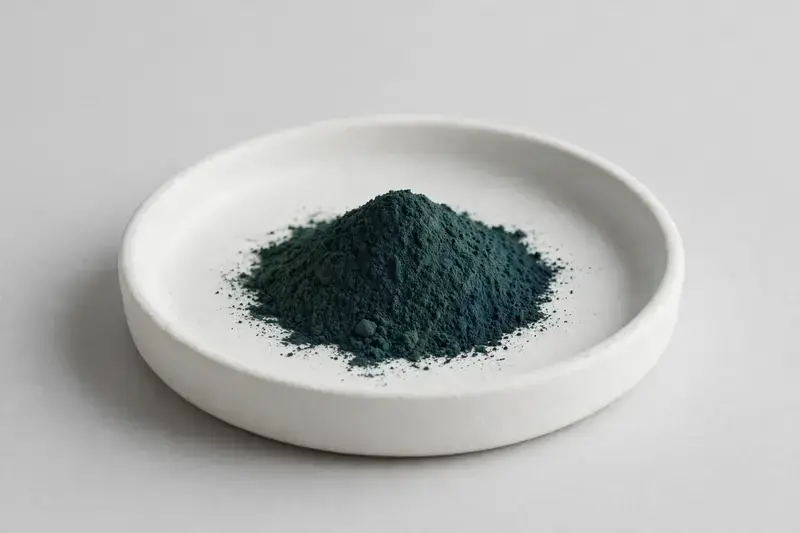

Chlorella vulgaris whole microalga, offered for greens and superfood-oriented formulations.

Overview
Chlorella Powder is whole-cell Chlorella vulgaris, typically traded with protein and chlorophyll as the primary markers and often specified in a cracked-cell-wall grade for better digestibility. Demand centers on greens and superfood blends, capsules and beverage mixes. We source through vetted partner producers and confirm cell-wall treatment, marker levels and testing scope against your target specification.
Specifications below reflect commonly requested options in the market — not a stock list. Share your target spec and we'll confirm exactly what we can supply, honestly.
| Specification | Details |
|---|---|
| Botanical identity | Chlorella vulgaris, whole microalga |
| Marker compound | Protein and chlorophyll — commonly requested: cracked cell wall grade; protein typically 50–60% (Kjeldahl or comparable) |
| Appearance | Fine powder, color typical of the extract |
| Mesh size | Typically 80–100 mesh (confirm per inquiry) |
| Testing | COA/TDS arranged on request; scope agreed per your spec |
Applications
Documentation
We don't claim in-house labs or certifications we don't hold. COA and TDS documents can be arranged on request, and testing scope is agreed against your specification before supply.
FAQ
Related products
Trigonella foenum-graecum
Key marker: Saponins
View specs →Vitis vinifera
Key marker: OPC / Proanthocyanidins
View specs →Zingiber officinale
Key marker: Gingerols
View specs →Arthrospira platensis
Key marker: Protein / Phycocyanin
View specs →Euterpe oleracea
Key marker: Anthocyanins
View specs →Send your target spec and volumes — we'll respond with a tailored quotation.
Request a Quote